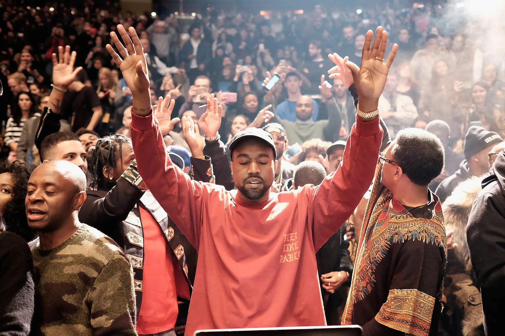

KANYE WEST

¿Quien es Kanye West?
Kanye West nacido como Kanye Omari West; Atlanta,Georgia; 8 de junio de 1977) es un rapero, productordiscográfico, diseñador de moda y empresario estadounidense
Regresar